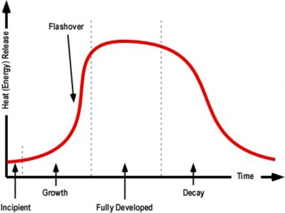
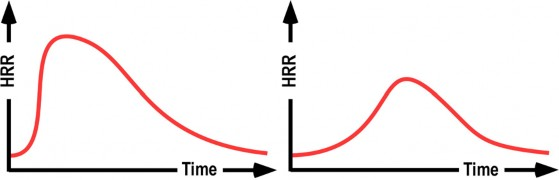
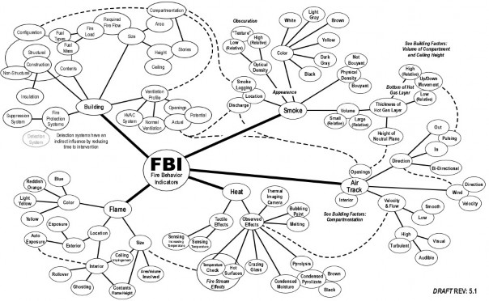
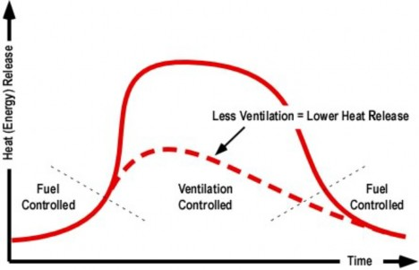
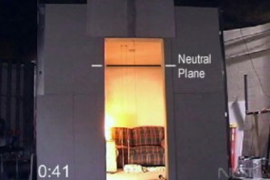
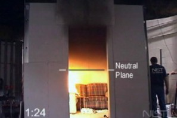
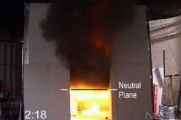
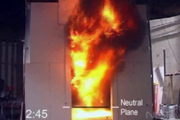
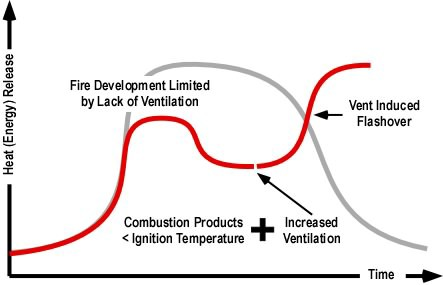

Fire Development and Fire Behavior Indicators
Battalion Chief Ed Hartin, MS, EFO, MIFireE, CFO
Building Factors, Smoke, Air Track, Heat, and Flame (B-SAHF) are critical fire behavior indicators. Understanding the indicators is important, but more important is the ability to integrate these factors in the process of reading the fire as part of size-up and dynamic risk assessment.
Part of the process of reading the fire involves recognizing the stages of fire development that are involved. Remember that fire conditions can vary considerably throughout the building with one compartment containing a fully developed fire, an adjacent compartment in the growth stage, and still other compartments yet uninvolved. Recognizing the stages of fire development and likely progression through this process allows firefighters to predict what will happen next (if action is not taken), potential changes due to unplanned ventilation (such as failure of a window), and the likely effect of tactical action.
Compartment fire development can be described as being comprised of four stages: incipient, growth, fully developed and decay (see Figure 1). Flashover is not a stage of development, but simply a rapid transition between the growth and fully developed stages.
Figure 1. Fire Development in a Compartment

Compartment fires do not always follow the simple, idealized fire development curve illustrated in Figure 2. The speed with which the fire develops, peak heat release rate, and duration of burning are dependent on both the characteristics of the fuel involved and ventilation profile (available oxygen) as illustrated in Figure 3.
Figure 2. Heat Release Rate Varies with Fuel Characteristics and Vent Profile

Firefighters can easily observe some of the B-SAHF indicators. However, fire behavior indicators encompass a wide range of factors that firefighters may see, hear, or feel. Some factors are relatively unchanging (i.e. building construction) and others are quite dynamic, changing as the fire develops (i.e. smoke conditions and flames).
Building: Unlike the other fire behavior factors, the building and its contents are present prior to ignition and can be examined during the preplanning process. While many common types of buildings and occupancies (such as single family dwellings) are not the focus of a formal preplan program, firefighters can examine common features and their influence on fire behavior. This pre-fire assessment of likely fire development and spread should be compared with actual fire behavior encountered during emergency incidents to improve skill in reading building factors.
Smoke and Air Track: Smoke conditions and the pattern of smoke and air movement are two of the most important indicators of fire behavior. The location and appearance of smoke can provide valuable cues related to the location of the fire, its burning regime (fuel or ventilation controlled) and the stage of fire in various areas of the building. It is critical that firefighters begin their assessment of smoke and air track indicators from outside the building, but continue this process on an ongoing basis from both the interior and exterior of the structure.
Heat: While heat cannot be observed directly, observation of the effect of heat on air track (i.e., velocity of smoke discharge), the building or exposures, and sensation of changes in temperature can be significant fire behavior indicators. It is important to remember that our personal protective equipment provides significant insulation and slows the transfer of heat and resulting sensation of changes in temperature.
Flame: Flaming combustion is often the most obvious or visible indicator observed by firefighters. However, do not get so focused on visible flames that you miss more important, but subtle building, smoke, air track, and heat indicators. Flame indicators such as location, volume,
color, etc. are important, but need to be integrated into the B-SAHF framework to provide a more complete picture.
Figure 3 integrates the concept maps presented in previous articles and outlines some of the major interrelationships between the B-SHAF fire behavior indicators.
Figure 3. Fire Behavior Indicators Concept Map Version 5.1

Note: Click on Figure 3 for a larger view of the concept map.
Going back to the basics of fire behavior, ignition requires heat, fuel, and oxygen. Once combustion begins, development of an incipient fire is largely dependent on the characteristics and configuration of the fuel involved (fuel controlled fire). Air in the compartment provides adequate oxygen to continue fire development. During this initial phase of fire development, radiant heat warms adjacent fuel and continues the process of pyrolysis. A plume of hot gases and flame rises from the fire and mixes with the cooler air within the room. This transfer of energy begins to increase the overall temperature in the room. As this plume reaches the ceiling, hot gases begin to spread horizontally across the ceiling. Transition beyond the incipient stage is difficult to define in precise terms. However, as flames near the ceiling, the layer of hot gases becomes more clearly defined and increases in volume, the fire has moved beyond its incipient phase and (given adequate oxygen) will continue to grow more quickly.
Depending on the size of the compartment and ventilation profile, there may only be a limited indication (or no indication at all) from the exterior of the building that an incipient stage fire is burning within. Incipient stage indicators are listed in Table 1.
Table 1. FBI: Incipient Stage


Building Size, contents, ventilation profile, and fire protection systems all have a significant influence on potential fire development and should be considered regardless of the stage of fire development.
Building factors (such as size and ventilation profile) influence how other fire behavior indicators will present. The building and its contents will also influence how quickly a fire will transition from incipient to growth stage.


Smoke Smoke will be limited and there will not be a well defined layer of hot gases in the upper area of the compartment. If smoke is visible from the exterior volume will generally be light in color and have limited buoyancy.

Air Track Air track is generally not a major factor in recognition of incipient stage fires.
However some light smoke discharge and inward air movement may be observed from openings close to the fire location.

Heat Low (near ambient) temperature within the compartment, condensation may be visible on windows in or near the fire compartment.
Depending on the degree of insulation, a heat signature may or may not be visible from the exterior using a thermal imaging camera (TIC).


Flame Fire confined to a small area (i.e., the object of origin) and flames lower than ceiling height.

Consider the following situation and how critical fire behavior indicators would present. Use the B-SAHF model to help you frame your answers.
You have responded to a fire in a one-story single family dwelling of wood frame construction. An incipient fire is burning a bedroom on the Alpha Bravo corner of the structure. The fire is limited to a plastic trash can containing waste paper which is located next to the bed.
What conditions would you expect to see from the exterior of the structure?
What indicators may be visible from the front door as you make entry?
What might you observe traveling through the living room and down the hallway?
What conditions would you find in the bedroom?
It is essential to think about what you are likely to find inside when observing fire behavior indicators from the exterior and performing a risk assessment. After making entry, consider if conditions are different than you anticipated.
Why might this be the case?
What differences in conditions would be cause for concern?
If there is adequate oxygen within the compartment additional fuel will become involved and the heat release rate from the fire will increase. While considerably more complex, gas temperatures within the compartment may be described as existing in two layers: A hot layer extending down from the ceiling and a cooler layer down towards the floor. Convection resulting from plume and ceiling jet along with radiant heat from the fire and hot particulates in the smoke increases the temperature of the compartment linings and other items in the compartment.
As gases within the compartment are heated they expand and when confined by the compartment increase in pressure. Higher pressure in this layer causes it to push down within the compartment and out through openings. The pressure of the cool gas layer is lower, resulting in inward movement of air from outside the compartment. At the point where these two layers meet, as the hot gases exit through an opening, the pressure is neutral. The interface of the hot and cool gas layers at an opening is commonly referred to as the neutral plane.
The fire can continue to grow through flame spread or by ignition of other fuel within the compartment. As flames in the plume reach the ceiling they will bend and begin to extend horizontally. Pyrolysis products and flammable byproducts of incomplete combustion in the hot gas layer will ignite and continue this horizontal extension across the ceiling. As the fire moves further into the growth stage, the dominant heat transfer mechanism within the fire compartment shifts from convection to radiation. Radiant heat transfer increases heat flux (transfer of thermal energy) at floor level. Growth stage indicators are listed in Table 2.
Table 2. FBI: Growth Stage

Building Size, construction, fire load and ventilation profile influence ongoing fire development.

Smoke A well defined layer of hot smoke is likely to exist in the upper level of the compartment. If smoke is not confined to the compartment it will be spreading into adjacent compartments.
Smoke may be visible from the exterior (see air track indicators)


Air Track Air track is dependent on the ventilation profile. If the compartment has a single opening (such as a door), there will be a bi-directional air track (smoke out the top and air in the bottom). As the fire grows, air track velocity of smoke discharge and air intake will increase. Velocity is likely to be greater at openings close to the fire. However, air track at exterior openings is significantly influenced by wind, and remember to consider the influence of ambient weather conditions.


Heat Temperature inside the fire compartment and adjacent spaces will be above ambient, but will be lower in compartments located further away from the fire.
Condensation disappears from windows in or near the fire compartment. Brownish staining on window glazing from pyrolysis products may become visible, heat indicators may be visible from the exterior of the compartment, particularly cracking window glass or heat at the upper level of doors, and Increasing overall temperature within the compartment.
It is likely that a heat signature will be observed in the area of the fire compartment using a thermal imaging camera (TIC) from the exterior. After making entry, convection of hot gases will be visible using the TIC.


Flame Fire extending beyond the object of origin and flames reaching ceiling height, bending and beginning to travel horizontally across the ceiling or through the hot gas layer. If there is an opening to the exterior in the fire compartment, flame may also be visible from the exterior.
Later in the growth stage, isolated flames may be observed in the hot gas layer away from the immediate fire area (one indicator of ventilation controlled conditions).


Returning to the scenario of the residential fire, consider the following situation and how critical fire behavior indicators would present. Use the B-SAHF model to help you frame your answers.
You have responded to a fire in a one-story single family dwelling of wood frame construction. A growth stage fire is burning a bedroom on the Alpha Bravo corner of the structure. The fire involves a plastic trash can, the bed, and night stand.
What conditions would you expect to see from the exterior of the structure?
What indicators may be visible from the front door as you make entry?
What indicators would you anticipate observing as you traveled through the living room and down the hallway to the bedroom where the fire is located?
What conditions would you find in the bedroom?
As the fire moves through the growth stage, the speed at which conditions change increases rapidly. After making entry, consider if conditions are different than you anticipated?
Why might this be the case?
What differences in conditions would be cause for concern?
Flashover is the sudden transition from a growth stage to fully developed fire. When flashover occurs, there is a rapid transition to a state of total surface involvement of all combustible material within the compartment. Conditions for flashover are defined in a variety of different ways. In general, ceiling temperature in the compartment must reach 500o-600o C (932o-1112o F) or the heat flux (a measure of heat transfer) to the floor of the compartment must reach 15-20 kW/m2 (79.25 Btu/min/ft2)-105.67 Btu/min/ft2). When flashover occurs, burning gases will push out openings in the compartment (such as a door leading to another room) at a substantial velocity.
Recognizing flashover and understanding the mechanisms that cause this extreme fire behavior phenomenon is important. However, the ability to recognize key indicators and predict the probability of flashover is even more important. Indicators of potential or impending flashover are listed in Table 3.
Table 3. FBI: Flashover


Building Flashover can occur in all types of buildings. Building factors can influence how quickly a fire will reach flashover (i.e., fire load, ventilation profile, thermal properties) and should be considered an integral part of ongoing risk assessment.


Smoke Smoke indicators may or may not be visible from the exterior of the structure. However, smoke conditions indicating a developing fire are a warning sign of potential flashover conditions.
After making entry, the presence of hot gases overhead and lowering of the hot gas layer are key indicators. Darkening smoke can be a flashover indicator, but do not depend on smoke color alone


Air Track A strong bi-directional (air in and smoke out) air track can be a significant indicator of flashover that will move in the direction of the opening. However, any air track that shows air movement in to the fire can result in flashover. Increasing velocity of the air track when combined with other indicators can be a strong flashover indicator.
Use of a thermal imaging camera (TIC) can allow more effective observation of convective heat currents within the building.


Heat Outside the fire compartment, perception of increasing temperature may not provide reasonable warning of impending flashover. However, perception of increasing temperature and observation of heat indictors such as pyrolysis of fuel packages some distance from the fire should be considered as a strong indicator of worsening fire conditions and potential for flashover. Use of a TIC allows observation of increased temperature and may allow observation of flaming combustion within the hot gas layer. Observation of the opening to the fire compartment will indicate high temperature at the top of the opening.
From the exterior, increasing velocity of smoke discharge (an air track indicator) also indicates increasing temperature within the building. A TIC may allow observation of a pronounced heat signature in the area of the fire compartment.


Flame Isolated flames traveling in the hot gas layer (ghosting) or more substantially through the gas layer or across the ceiling (rollover). It is important to note that these flames may or may not be visible (without use of a thermal imaging camera).
A later (potentially too late) indicator of impending flashover is rollover moving along the ceiling of the fire compartment and into adjacent spaces.
It is important to remember that flashover does not always occur. There must be sufficient fuel and oxygen for the fire to reach flashover. If the initial object that is ignited does not contain sufficient energy (heat of combustion) and does not release it quickly enough (heat release rate), flashover will not occur (e.g., small trash can burning in the middle of a large room). Likewise, if the fire sufficiently depletes the available oxygen, heat release rate will drop and the fire in the compartment will not reach flashover (e.g., small room with sealed windows and the door closed).
At this post-flashover stage, energy release is at its greatest, but is generally limited by ventilation (more on this in a bit). Unburned gases accumulate at the ceiling level and frequently burn as they leave the compartment, resulting in flames showing from doors or windows. The average gas temperature within a compartment during a fully developed fire ranges from 700o – 1200o C (1292o – 2192o F)
Remember that the compartment where the fire started may reach the fully developed stage while other compartments have not yet become involved. Hot gases and flames extending from the involved compartment transfer heat to other fuel packages (e.g., contents, compartment linings, and structural materials) resulting in fire spread. Conditions can vary widely with a fully developed fire in one compartment, a growth stage fire in another, and an incipient fire in yet another. It is important to note that while a fire in an adjacent compartment may be incipient, conditions within the structure are immediately dangerous to life and health (IDLH).
Table 4. FBI: Fully Developed


Building As with the growth stage, size, construction, and fire load influence fire development. Fire effects on the building can change the ventilation profile


Smoke Smoke will darken to darker gray, brown, or black. Smoke color influenced to a substantial extent by what is burning and color may vary. Volume, optical density, and volume of smoke will increase. The height of the hot gas layer and neutral plane at openings is influenced by the ventilation profile, but if the compartment is not well ventilated, the hot gas layer will drop close to the floor as the fire progresses through this stage.

Air Track Air track is dependent on the ventilation profile. However, given a single opening such as a door, smoke will exit out the top while air moves in the bottom. A fully developed fire will generally develop a well-defined and strong air track. The velocity of smoke and air movement will commonly be quite high and smoke discharge will be turbulent.


Heat In this stage of fire development, the fire is producing substantial heat. There are likely to be visual indicators of high temperature such as blackend windows, crazing window glazing. Hot surfaces (i.e., doors) may be detected using a fire stream or thermal imager. In addition high temperature can be felt, even when wearing structural firefighting clothing.


Flame Flames may be visible from the exterior, with extent indicating the area and extent of involvement to some degree. Fire will involve the entire compartment in this post flashover stage of fire development. Flames may be readily visible, but also may be obscured by smoke as the fire becomes ventilation controlled.

If the fire in our residential scenario has progressed to the fully developed stage (in the compartment of origin) what fire behavior indicators might be observed? Use the B-SAHF model to help you frame your answers.
You have responded to a fire in a one-story single family dwelling of wood frame construction. A fire which started in a bedroom on the Alpha Bravo corner of the structure has reached the fully developed stage and now involves the contents of the room and interior finish of this compartment.
What conditions would you expect to see from the exterior of the structure?
What indicators may be visible from the front door as you make entry?
Remember that fire conditions will vary throughout the building. While the fire is fully developed in the bedroom, conditions may be different in other compartments within the building.
What indicators would you anticipate observing as you traveled through the living room to the hallway leading to the bedroom?
What conditions would you find in the hallway outside the fire compartment? After making entry, consider if conditions are different than you anticipated?
Why might this be the case?
What differences in conditions would be cause for concern?
A compartment fire may enter the decay stage as the available fuel is consumed or due to limited oxygen. As discussed in relation to flashover, a fuel package that does not contain sufficient energy or does not have a sufficient heat release rate to bring a compartment to flashover, will pass through each of the stages of fire development (but may not extend to other fuel packages). On a larger scale, without intervention an entire structure may reach full involvement and as fuel is consumed move into the decay stage. However, there is another, more problematic way for the fire to move into the decay stage. When the ventilation profile of the compartment or building does not provide sufficient oxygen, the fire may move into the decay stage. Heat release rate decreases as oxygen concentration drops, however, temperature may continue to rise for some time. This presents a significant threat as the involved compartment(s) may contain a high concentration of hot, pyrolized fuel, and flammable gaseous products of combustion.
Under ventilation controlled conditions excess pyrolizate and flammable products of combustion present in smoke are a significant hazard to firefighters. Let’s go back to the fire triangle (see Figure 4) to examine the nature of this threat. While fuel, heat, and oxygen are present in proportion to support combustion where the fire is burning, the heat of the fire is pyrolyzing more fuel vapor than the fire can consume. In addition, incomplete combustion results in production of flammable gases such as carbon monoxide. The speed of fire development is limited by the availability of atmospheric oxygen provided by the current ventilation profile of the compartment or building.
Figure 4. Fire Development with Limited Ventilation

When the fire is burning in a ventilation controlled state, any increase in the supply of oxygen to the fire will result in an increase in heat release rate. Increase in ventilation may result from firefighters making entry into the building (the access point is a ventilation opening), tactical ventilation (performed by firefighters), or unplanned ventilation (e.g., failure of window glazing due to elevated temperature).
It is essential to recognize when the fire is, or may be ventilation controlled and the influence of planned and unplanned changes in ventilation profile. Most compartment fires that progress into the growth stage are ventilation controlled when the fire department arrives. A bi-directional air track (smoke out the top and air in the bottom) is often a significant indicator of a ventilation controlled fire. As illustrated in Figure 5, as the neutral plane drops, smoke exiting through the opening reduces the size of the inlet opening, further restricting the air available for combustion and extent to which the fire is ventilation controlled.
Figure 5. Neutral Plane and Burning Regime
 
 
Note: Photos adapted from National Institute of Standards and Technology (NIST) ISO- Room/Living Room Flashover.
The series of photos in Figure 5 also illustrates the influence of decreased oxygen supply on the color and optical density of smoke. As combustion becomes more incomplete, smoke production increases, color darkens, and optical density increases. When working inside a burning building, flames moving through the hot gas layer are also a strong indicator of a ventilation controlled fire.
When the fire is ventilation controlled, increased air supply to the fire will result in increased heat release rate and depending on conditions may result in extreme fire behavior such as flashover or backdraft. While similar, vent induced flashover and backdraft are different phenomena. When the fire is ventilation controlled and fuel gas and vapor in the smoke is below its ignition temperature, increased ventilation is likely to result in a vent induced flashover (see Figure 6). If fuel gas and vapor in the smoke is above its ignition temperature and the rate of combustion is generally much faster (deflagration) producing a more violent backdraft (see Figure 7).
Figure 6. Ventilation Induced Flashover

Figure 7. Backdraft

While these phenomena are different, both present a significant threat to firefighters. Rapid fire progress due to ventilation induced flashover or backdraft is not an instantaneous process.
Depending on a number of variables such as the location of the fire, current level of involvement, temperature of the smoke (hot gas) layer, and extent of the increase in ventilation these rapid fire progress phenomenon may take some time to occur. However, when it does, fire development will be extremely rapid! Firefighters entering a compartment or building containing an under ventilated fire must be aware of and manage the hazards presented by the potential for rapid fire progress. Remember, many if not most fires that have progressed beyond the incipient stage before firefighters arrival are ventilation controlled and present the potential for rapid fire progress with increased ventilation.
Table 5 lists the fire behavior indicators related to ventilation controlled decay stage conditions and the potential for ventilation induced extreme fire behavior. It is important to note that there are not always clear distinctions in the visual indicators for vent induced flashover and backdraft.
Table 5. FBI: Ventilation Controlled Decay Stage


Building Confinement of the fire (note that this may apply to a single compartment or void space and not the entire building). The hazard of ventilation induced extreme fire behavior is increased when building contents have a high heat of combustion.


Smoke Volume and optical density of smoke will increase. Under ventilation controlled decay conditions the hot gas layer will generally (but not always) fill the compartment with pressurized smoke exiting small openings. Smoke color influenced to a substantial extent by what is burning and color may vary. Light color smoke or black smoke becoming dense gray yellow. Yellow smoke is often associated with decay due to limited ventilation (and backdraft conditions). However, color alone is not a reliable indicator as smoke may also be gray, black, or brown. Smoke that is optically dense and has the appearance of texture is a more significant indicator. Raising and lowering of the neutral plane (this is similar to pulsing air track, but in this case the compartment is not full). The height of the hot gas layer and neutral plane at openings is influenced by the ventilation profile, but if the compartment is not well ventilated, the hot gas layer will drop close to the floor as the fire progresses through this stage.

Air Track Air track in decay is dependent on the cause (lack of fuel or lack of oxygen). If due to a lack of oxygen, there may be a pulsing air track (in and out or up and down) and the velocity of smoke discharge can be quite high with significant turbulence. However it is important to note that air track is significantly influenced by opening size and proximity to the fire.


Heat Temperature during the decay stage can initially be quite high (and continue to rise for some time). There may be visual indicators such as blackened windows, high velocity smoke discharge, and surfaces such as windows and doors are likely to be quite hot. However, if decay is due to ventilation controlled conditions, temperature will eventually drop (if the compartment remains sealed).


Flame In ventilation controlled decay flaming combustion is reduced. However, do not be fooled! Flames may be present. Ignition of fire gases escaping from the compartment (as they mix with air) can provide a strong indication of fuel rich, oxygen deficient decay conditions. Also remember that conditions can vary considerably in different parts of the structure. Backdraft conditions can exist in a void space while you can see a fully developed fire with flames showing from several windows.
It is often assumed (incorrectly) that ventilation induced extreme fire behavior (flashover or backdraft) will occur immediately after an increase in ventilation. Depending on fire conditions and building configuration there may be a significant time lag between ventilation and resulting changes in fire behavior. When ventilation controlled decay conditions are indicated (or suspected), firefighters should move cautiously and take action to change conditions inside the building or compartment (e.g., gas cooling, ventilation).
You have responded to a fire in a one-story single family dwelling of wood frame construction. A fire which started in a bedroom on the Alpha Bravo corner of the structure has gone from fully developed to the decay stage due to a lack of oxygen as building openings (doors and windows) remain closed and intact.
What conditions would you expect to see from the exterior of the structure?
What indicators may be visible from the front door as you make entry?
A fire in the decay stage (particularly when this is due to limited oxygen) still presents a significant threat as conditions can change rapidly.
If the door at your entry point remains fully open, how will this influence fire behavior (assuming no other ventilation has been performed)?
How would fire behavior be influenced if a window (or windows) in the fire compartment are opened along with the door at your entry point?
What indicators would you anticipate observing as you traveled through the living room to the hallway leading to the bedroom?
What conditions would you find in the hallway outside the fire compartment?
After making entry, consider if conditions are different than you anticipated?
Why might this be the case?
What differences in conditions would be cause for concern?
National Institute of Standards and Technology. (2005). ISO-room/living room flashover [digital video disk]. Gaithersburg, MD: Author.
The following series of articles addresses compartment fire development and fire behavior indicators in greater depth and are a useful addition to the material presented in this discussion of the relationship between fire development and fire behavior indicators.
Hartin, E. (2005) Fire development in a compartment part 1: Review of basic fire behavior.
Retrieved January 19, 2008 from www.firehouse.com.
Hartin, E. (2005) Fire development in a compartment part 2. Retrieved January 19, 2008 from www.firehouse.com.
Hartin, E. (2005) Smoke burns. Retrieved January 19, 2008 from www.firehouse.com.
Hartin, E. (2007) Fire behavior indicators: Building expertise. Retrieved January 19, 2008 from www.firehouse.com.
Hartin, E. (2007) Reading the fire: Building factors. Retrieved January 19, 2008 from www.firehouse.com.
Hartin, E. (2007) Reading the fire: Smoke and air track. Retrieved January 19, 2008 from www.firehouse.com.
Hartin, E. (2008) Reading the fire: Heat and flame. Retrieved January 19, 2008 from www.firehouse.com.